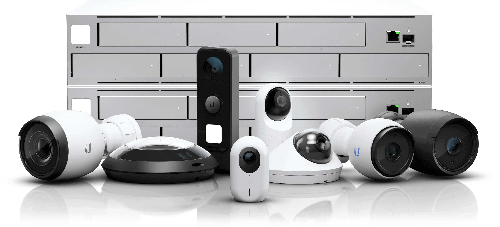
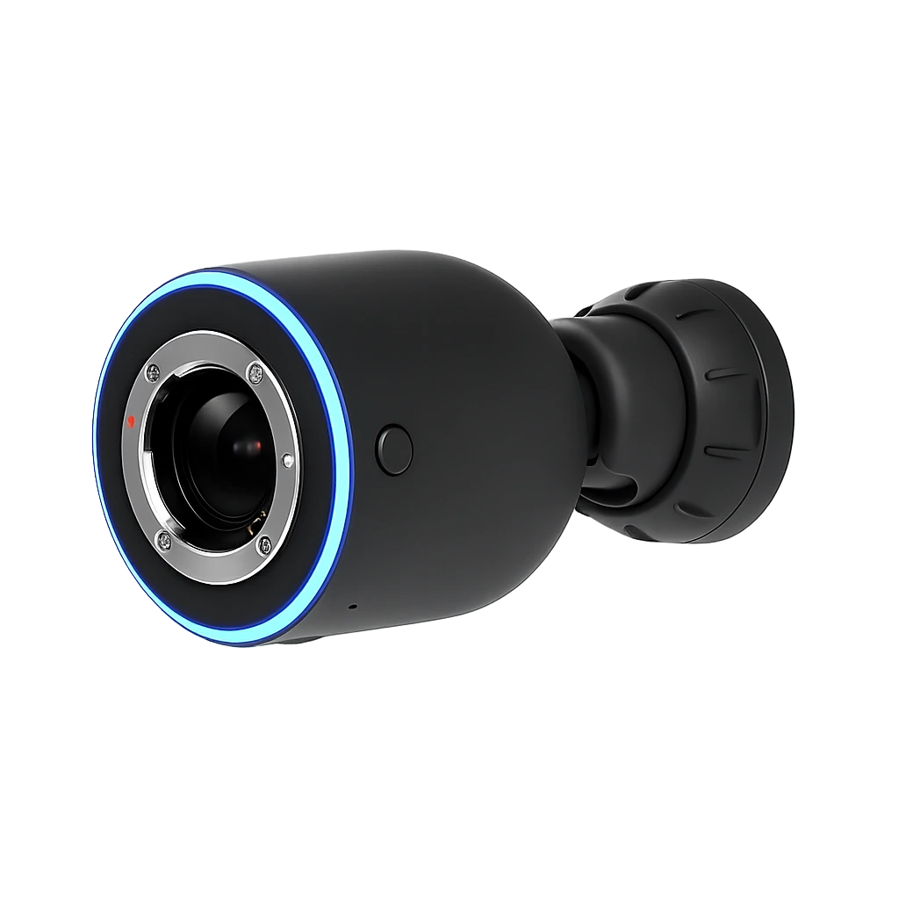

01
Analýza objektu a rizik
Projdeme přístupy, slabá místa i provozní režimy domu nebo firmy a stanovíme prioritu jednotlivých zón.
Navrhujeme zabezpečení a kamerové systémy tak, aby chránily objekt bez zbytečné složitosti. Jasná logika, rychlá orientace a návaznost na celý chytrý dům.

Funkční bezpečnostní řešení propojuje detekci, záznam, přístup a jasné reakce na konkrétní situace. Nestačí jen osadit kamery nebo čidla.

Postup realizace
Začínáme posouzením rizik a končíme bezpečnostním řešením, ve kterém se uživatel rychle zorientuje a které je dobře servisovatelné.
Projdeme přístupy, slabá místa i provozní režimy domu nebo firmy a stanovíme prioritu jednotlivých zón.
Určíme umístění kamer, čidel, způsob notifikací i návaznosti na přístupový systém a další technologie.
Nasadíme zařízení, nastavíme záznam, přístupy a bezpečnostní scénáře podle konkrétního provozu objektu.
Ověříme správné reakce systému, kvalitu záznamu i způsob obsluhy a předáme řešení přehledně a srozumitelně.
Bezpečnostní standard
Bezpečnost stavíme na přehledu, návaznosti a jasných reakcích. Systém musí chránit objekt, ale zároveň zůstat srozumitelný pro uživatele i servis.
Zóny a detekce nastavujeme tak, aby systém reagoval správně a nezahlcoval falešnými událostmi.
Události, kamery i alarmy musí být čitelné a okamžitě pochopitelné bez zbytečného hledání.
Kamerový dohled, alarm a přístup řešíme jako jeden celek, ne jako oddělené ostrůvky.
Každá událost má jasně definovaný následek, notifikaci i další návazné akce v objektu.
Řešení dokumentujeme a nastavujeme tak, aby bylo dlouhodobě udržitelné i při budoucích úpravách.
Systém lze doplnit o další kamery, zóny nebo návaznosti bez rozpadu původní logiky.
Výsledek pro provoz
Nejen ochranu objektu, ale i jistotu, že v případě události budete rychle vědět, co se stalo a jak reagovat.
Kombinace kamer, notifikací a logiky scén zajišťuje rychlou orientaci i na dálku.
Systém reaguje jasně a srozumitelně, takže bezpečnostní technologie nepřinášejí zmatek ani při poplachu.
Bezpečnostní prvky jsou propojené s ostatními technologiemi, takže vše funguje v jedné logice.
Nové zóny, vstupy nebo zařízení lze doplňovat bez zbytečných předělávek a improvizace.
ZAČNĚME ŘEŠENÍM, KTERÉ OPRAVDU CHRÁNÍ